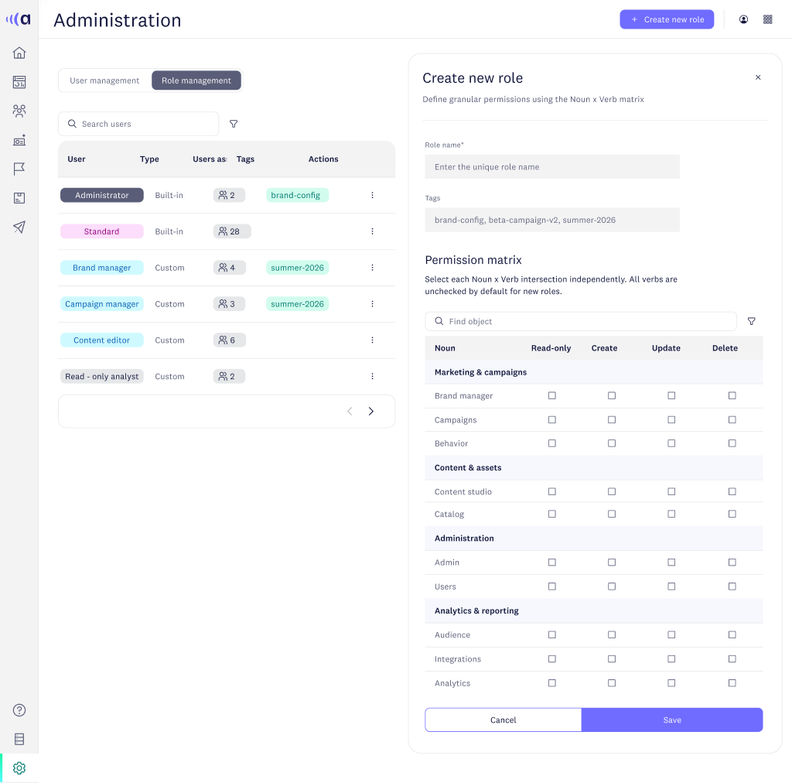
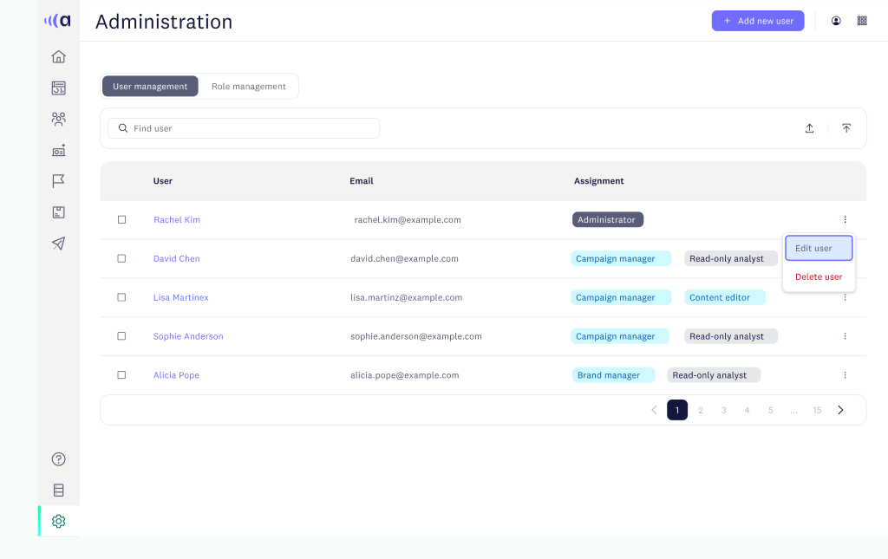
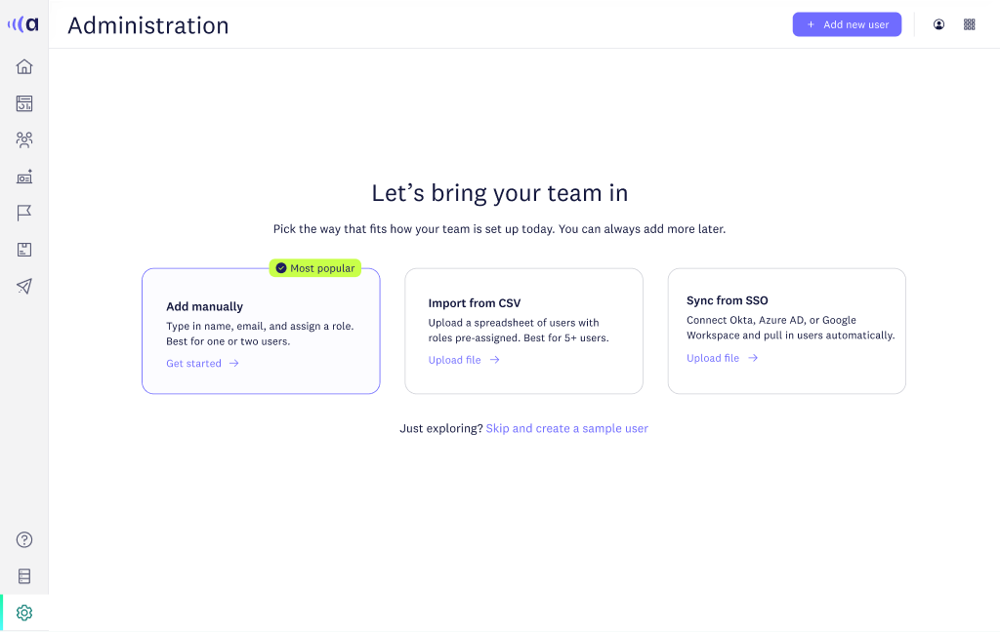

Enterprise admin suite
Advanced permissions
A full roles and access system for an enterprise account that was ready to walk. Four weeks, concept to production.

The situation
A major enterprise customer was close to churning. Their admins could add users and assign broad roles, but their security team needed far more control than that.
The task
Ship a complete administration suite in 4 weeks, or lose the account. It had to satisfy a strict security admin and still make sense to an IT generalist who rarely opens the product.
What I did
I designed a permission matrix that shows what a role can and can't do across every area, a slide-in panel for building roles while the list stays visible, three ways to bring a team in, and brand settings controlled by the same roles.
What happened
It shipped inside the four weeks and the account renewed. Three more enterprise wins cited it, and sales now demos it with confidence.
The admin, start to finish
From a bare user list to a role anyone can read at a glance

Manage users
One home for every person and role
Search, edit and remove inline, with every state designed from first login to a full directory.

Bring teams in
Add by hand, import a CSV, or sync from SSO
The empty state points each admin to the path that fits their company size and IT setup.
4wk
Concept to production
3
New enterprise wins citing permissions
40+
Permission types across 4 functional areas, designed and documented